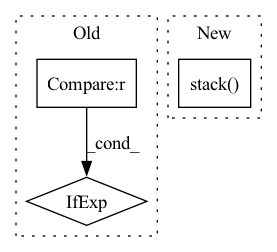

Pattern ID :11943
Before Change
feature_extractor = tf.keras.Model(inputs=model.inputs, outputs=layer.output)
print(">>>> Total filters for layer {}: {}".format(layer_name, layer.output_shape[-1]))
input_shape = model.input_shape[:2] if input_shape is None else input_shape[:2]
image = model.input_shape[:2] if input_shape is None else input_shape[:2]
// We run gradient ascent for [iterations] stepsAfter Change
filter_images.append(image)
ax, _ = stack_and_plot_images(filter_images, base_size=base_size)
return losses, np.stack( filter_images) , ax
def make_gradcam_heatmap(model, img_array, layer_name, pred_index=None):In pattern: SUPERPATTERN
Frequency: 4
Non-data size: 3
Instances Fragment ID: 40496473
Project Name: leondgarse/keras_cv_attention_models
Commit Name: 10b6b27744d9f2bcfdcfa74b6c0a3cdd0f72512c
Time: 2021-12-23
Author: leondgarse@gmail.com
File Name: keras_cv_attention_models/visualizing/visualizing.py
M Class Name: AnonimousClass
N Class Name: AnonimousClass
M Method Name: visualize_filters(7)
N Method Name: visualize_filters(7)
M Parent Class:
N Parent Class:
M File Name: keras_cv_attention_models/visualizing/visualizing.py
N File Name: keras_cv_attention_models/visualizing/visualizing.py
M Start Line: 52
M End Line: 73
N Start Line: 95
N End Line: 115
Before Change
self.input_shape = input_shape[1:-1] if len(input_shape) == 4 else input_shape[:2]
def __call__(self, image, resize_method="bilinear", resize_antialias=False, input_shape=None):
input_shape = self.input_shape if input_shape is None else input_shape[:2]
image = tf.convert_to_tensor(image)
if tf.reduce_max(image) < 2:
image *= 255After Change
self.set_input_shape(input_shape)
images = [image] if len(np.shape(image)) == 3 else image
images = [np.array(Image.fromarray(image).resize(self.input_shape)) for image in images]
images = (np.stack( images) - self.mean) / self.std
images = images if backend.image_data_format() == "channels_last" else images.transpose([0, 3, 1, 2])
return functional.convert_to_tensor(images) Fragment ID: 40496472
Project Name: leondgarse/keras_cv_attention_models
Commit Name: 2f70b0d51c8f2b1f8664f32dc75ecc1001758946
Time: 2023-01-29
Author: leondgarse@gmail.com
File Name: keras_cv_attention_models/common_layers.py
M Class Name: PreprocessInput
N Class Name: PreprocessInput
M Method Name: __call__(5)
N Method Name: __call__(5)
M Parent Class:
N Parent Class:
M File Name: keras_cv_attention_models/common_layers.py
N File Name: keras_cv_attention_models/common_layers.py
M Start Line: 586
M End Line: 601
N Start Line: 609
N End Line: 616
Before Change
if self.training and self.layer_dropout > 0:
to_drop = torch.empty(len(self.blocks)).uniform_(0, 1) < self.layer_dropout
blocks = [block for block, drop in zip(self.blocks, to_drop) if not drop]
blocks = self.blocks[:1] if len(blocks) == 0 else blocks
block_args = list(map(lambda x: {"f_args": x[0], "g_args": x[1]}, block_args))
return _ReversibleFunction.apply(x, blocks, block_args)After Change
blocks, args = map(lambda ind: list(map(itemgetter(ind), layers_and_args)), (0, 1))
out = _ReversibleFunction.apply(x, blocks, args)
return torch.stack( out.chunk(2, dim=-1)) .sum(dim=0)
Fragment ID: 40496475
Project Name: lucidrains/sinkhorn-transformer
Commit Name: d5b9c649e59290b15c15f85d0bb182cb20b699fb
Time: 2020-04-15
Author: lucidrains@gmail.com
File Name: sinkhorn_transformer/reversible.py
M Class Name: ReversibleSequence
N Class Name: ReversibleSequence
M Method Name: forward(2)
N Method Name: forward(2)
M Parent Class: nn.Module
N Parent Class: nn.Module
M File Name: sinkhorn_transformer/reversible.py
N File Name: sinkhorn_transformer/reversible.py
M Start Line: 133
M End Line: 142
N Start Line: 161
N End Line: 174
Before Change
if self.transforms is not None:
frames, masks = self.transforms(frames, masks)
n_objects = video["n_objects"] if video["n_objects"] <= self.options[
"n_max_objects"] else self.options["n_max_objects"]
return video["name"], n_objects, frames, masks
def _get_frame_indexes(self, n_frames, n_max_frames):After Change
frames, masks = self.transforms(frames, masks, n_objects)
// Masks to One Hot: (H, W) -> (n_object, H, W)
masks = torch.stack(
[utils.helpers.to_onehot(m, self.options["n_max_objects"] + 1) for m in masks], dim=0)
return video["name"], n_objects, frames, masks
def _get_frame_indexes(self, n_frames, n_max_frames): Fragment ID: 40496470
Project Name: hzxie/rmnet
Commit Name: a843987e94bf3cb9e0c2df96cd284dfab77b80fe
Time: 2020-04-13
Author: root@haozhexie.com
File Name: utils/data_loaders.py
M Class Name: Dataset
N Class Name: Dataset
M Method Name: __getitem__(2)
N Method Name: __getitem__(2)
M Parent Class: torch.utils.data.dataset.Dataset
N Parent Class: torch.utils.data.dataset.Dataset
M File Name: utils/data_loaders.py
N File Name: utils/data_loaders.py
M Start Line: 54
M End Line: 73
N Start Line: 39
N End Line: 60